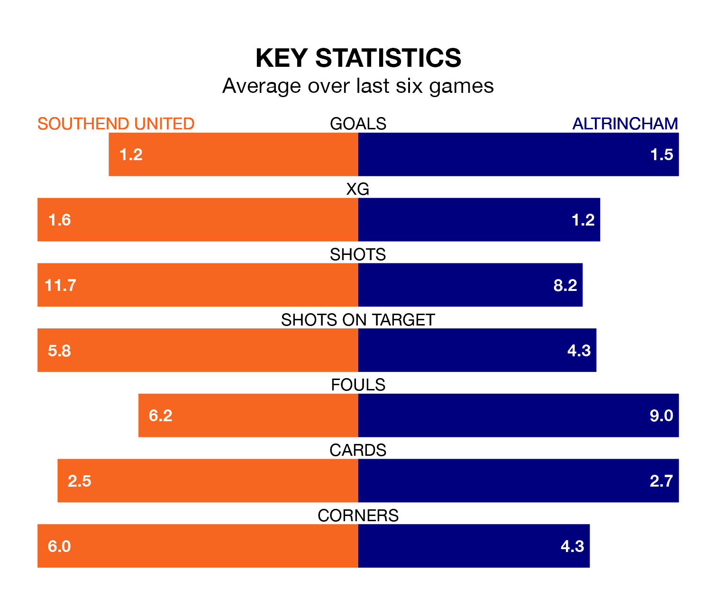

Altrincham face a challenge to maintain their high-scoring form away against a tight Southend United defence on Saturday.
With 49 goals in 27 games, Altrincham are the joint-fourth-highest scorers in National League ahead of the 3pm kick-off at Roots Hall.
They face a Shrimpers side who have scored 44 in 27 matches, but conceded only 28 goals, putting them second among the league's tightest defences – only Halifax Town have conceded fewer goals.
Southend are fifth in the table after 27 games, of which they have won 13 and drawn five, earning 44 points.
Altrincham are one place behind United in sixth, with 11 wins and 10 draws putting them on 43 points.
In the last five years, Southend and Altrincham have played each other on five occasions. They won two each, and they drew once.
On average, the Shrimpers scored 1.2 goals and Robins 1.2 in those matches.
Their last meeting was on November 11, when Altrincham won 2-0 at home.
The Shrimpers are in mixed form in National League, with three wins and three losses from their last six games.
With two wins and two draws over that period, Robins' form is slightly worse – they have taken eight points from 18, compared to the hosts' nine.
Southend's last match was on January 13, a 1-0 win against Eastleigh, with Jack Bridge getting the goal for the Shrimpers.
Altrincham lost 2-1 against Chesterfield last time out, on Tuesday, with Christopher Conn on the scoresheet.
Updated: 10:02 (UTC), 19/01/24